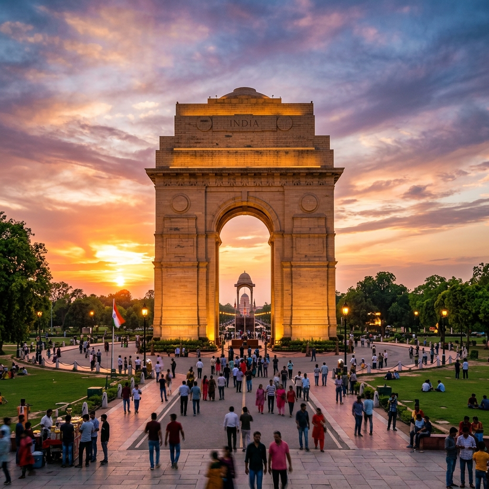
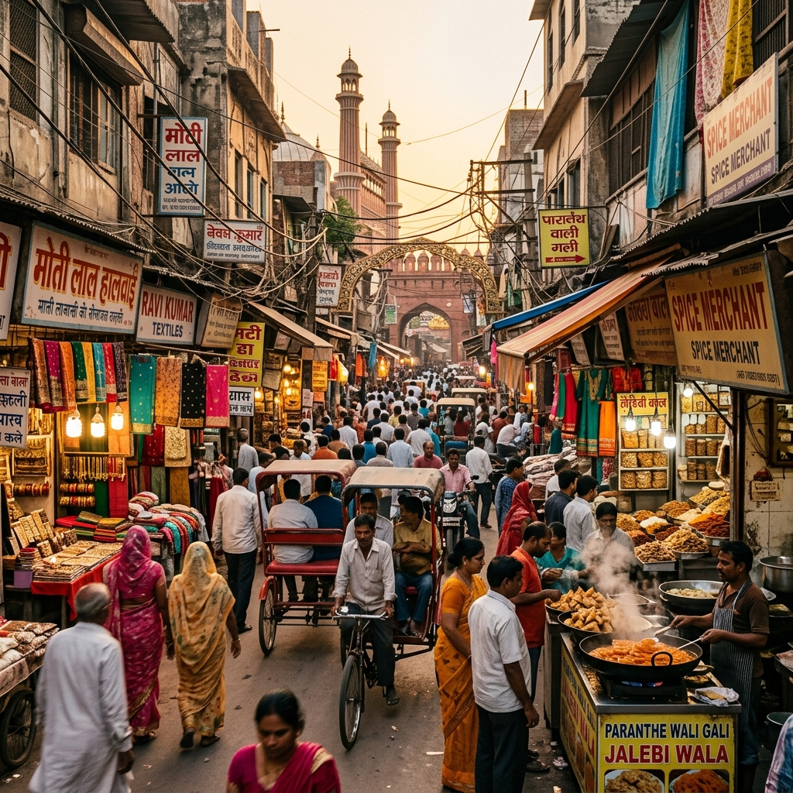
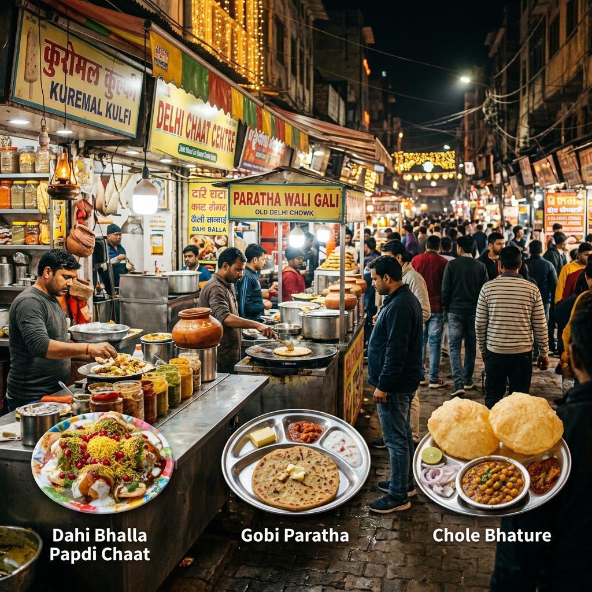
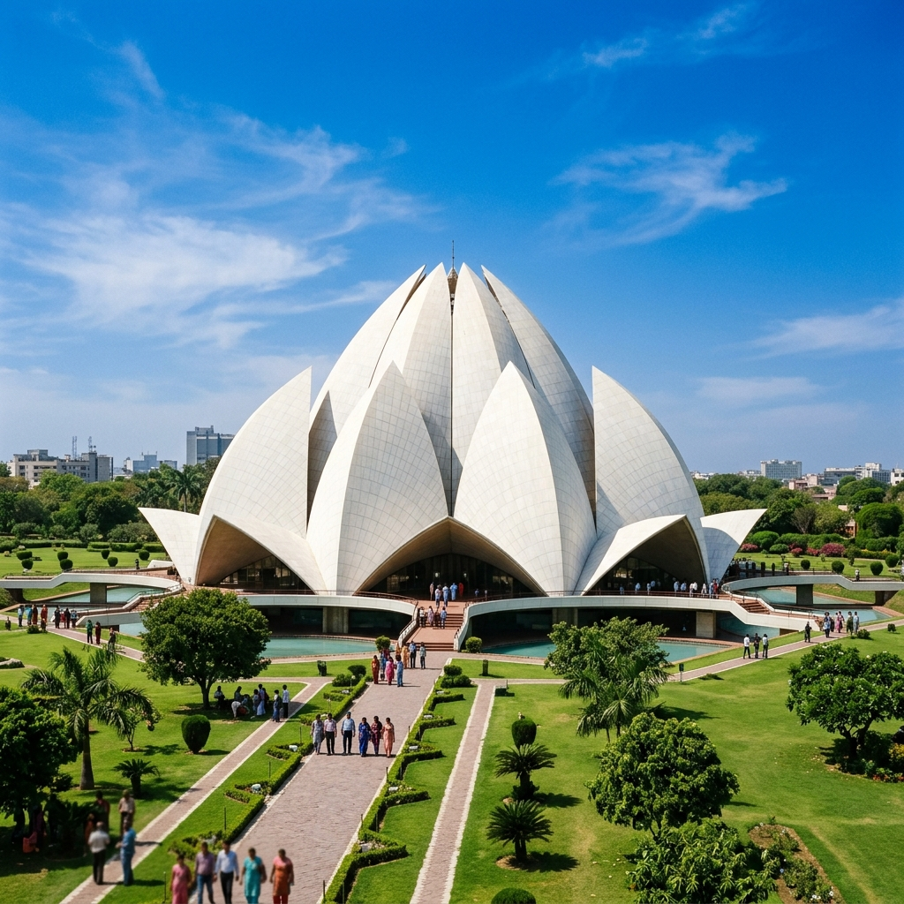
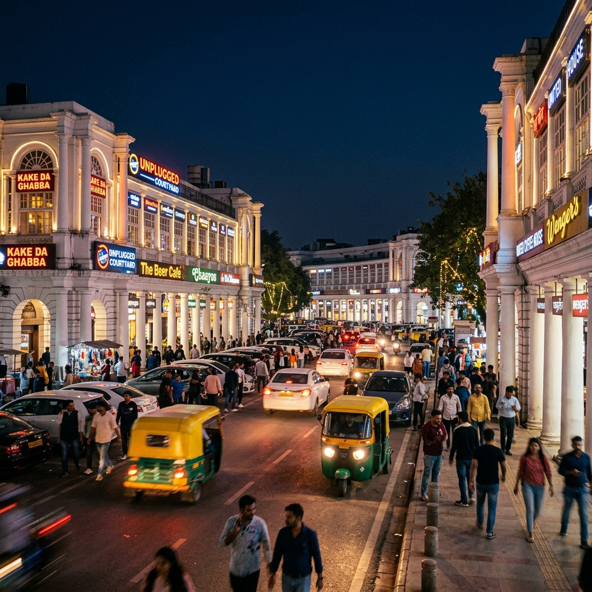

Your Complete Travel Companion
The Ultimate Delhi Travel Guide 2026
Sightseeing, shopping, food, temples, nightlife, hospitals, seasonal celebrations and distances to popular nearby destinations — everything you need to know before visiting India's vibrant capital.
Top 20 Sightseeing Places in Delhi
Delhi is not just a city — it is an open-air museum stretching across 3,000 years of history. Whether you are a first-time visitor or a seasoned traveller, these iconic landmarks never cease to amaze.
India Gate
A majestic 42-metre war memorial built in 1931, dedicated to the 84,000 Indian soldiers who died in World War I. Beautifully lit at night — perfect for an evening stroll. Planning a Golden Triangle Tour? India Gate is always stop number one.
Qutub Minar
The tallest brick minaret in the world (73 metres), this stunning UNESCO World Heritage Site dates back to 1192 CE. The intricate carvings and ancient iron pillar that hasn't rusted in 1,600 years are truly mind-blowing.
Red Fort (Lal Qila)
The grand red sandstone fortress built by Mughal Emperor Shah Jahan in 1648. Walking through its massive Lahore Gate feels like stepping back into Mughal royalty. A must-visit UNESCO site.
Humayun's Tomb
A gorgeous 16th-century Mughal garden tomb that actually inspired the design of the Taj Mahal! The symmetrical charbagh gardens surrounding it are as beautiful as the tomb itself.
Lotus Temple
One of the most visited buildings on Earth — this beautiful flower-shaped Baha'i House of Worship welcomes people of all faiths for silent meditation. The white marble architecture against the blue sky is simply stunning.
Jama Masjid
One of India's largest mosques, with capacity for 25,000 worshippers. Built by Shah Jahan in 1656, climb the minaret for a sweeping panorama of Old Delhi's crowded rooftops and golden spires.
Akshardham Temple
A modern masterpiece completed in 2005 — this sprawling Hindu temple complex features over 20,000 intricately carved pink sandstone statues and a breathtaking water show in the evenings.
Raj Ghat
The beautifully simple black marble platform marking the cremation site of Mahatma Gandhi. A deeply moving and peaceful memorial that puts Gandhi's spirit and legacy into perspective.
Jantar Mantar
An ancient astronomical observatory built in 1724 with huge stone instruments that could measure time, predict eclipses, and track stars. A UNESCO World Heritage Site that surprises everyone who visits it.
National Museum
The premier museum of India with over 200,000 artefacts spanning 5,000 years of Indian history — from the Indus Valley Civilization to Mughal miniatures and Buddhist bronzes.
Chandni Chowk
The heart and soul of Old Delhi — a labyrinth of narrow lanes filled with silver jewellers, spice merchants, and the most incredible street food you'll ever taste. An absolute sensory overload in the best way!
Purana Qila (Old Fort)
One of Delhi's oldest forts, believed to be built on the mythological site of Indraprastha from the Mahabharata. The Sound & Light Show held here evenings is a fabulous experience.
Safdarjung Tomb
The last great garden tomb of the Mughal era (1754), often called a smaller version of Humayun's Tomb. It is wonderfully peaceful and far less crowded than other monuments.
Connaught Place
Delhi's iconic circular marketplace and commercial hub, lined with stunning white colonial colonnaded buildings. Excellent cafes, restaurants, and shops surround Rajiv Chowk — the city's busiest metro station.
Hauz Khas Village
A medieval reservoir complex that has been transformed into one of Delhi's hippest neighbourhoods. Surrounded by ancient ruins, deer park, and dotted with boutique cafes and art galleries.
Gandhi Smriti
The very house (Birla Bhawan) where Mahatma Gandhi spent the last 144 days of his life before his assassination in 1948. The museum and the spot of his assassination are preserved beautifully.
Dilli Haat
An open-air craft bazaar where artisans from every state in India showcase their handloom, handicrafts, and regional cuisines. Perfect for buying authentic souvenirs directly from the maker.
National Zoological Park
One of India's largest zoos spread over 176 acres, home to white tigers, African elephants, and around 1,350 animals from 130+ species. Great for families with children.
Lodi Garden
A lush 90-acre garden filled with 15th-century tombs of the Lodi dynasty. A favourite morning walk spot for Delhiites — a calm, green oasis in the middle of the busy city.
Rashtrapati Bhavan
The magnificent Presidential Palace — one of the largest official residences of any head of state in the world. The Mughal Garden inside opens to public for a few weeks each year and is absolutely worth visiting.
10 Famous Shopping Markets in Delhi
Delhi is a shopaholic's paradise! From luxury malls to chaotic old bazaars selling everything at unbeatable prices — there is something for every kind of budget and taste.

Chandni Chowk
The oldest and busiest market in Delhi! Look for incredible wedding jewellery, saris, spices, electronics, and the most lip-smacking street food in Old Delhi. Bargaining is a must here.
Sarojini Nagar Market
Export surplus western clothing at unbelievably low prices. This is where Delhiites come to hunt for branded jeans, tops, and jackets. Busy on weekends — go early for the best picks!
Lajpat Nagar Central Market
Famous for affordable Indian ethnic wear, lehengas, salwar suits, and home furnishings. A go-to market for wedding shopping and festive outfits.
Dilli Haat (INA)
A government-run open-air market displaying authentic crafts from all 28 Indian states — Pashmina shawls, Madhubani paintings, blue pottery, Rajasthani puppets. Prices are fair and fixed.
Connaught Place
The heart of New Delhi with global brands, bookstores (Janpath Books is legendary!), restaurants, and the famous Janpath market for trendy street fashion and silver jewellery.
Palika Bazaar
An underground market beneath Connaught Place, famous for electronics, video games, watches, sunglasses, and clothing. Great for budget shopping — just be prepared for aggressive haggling!
Khan Market
One of the most expensive retail markets in Asia! Boutique stores, premium bookshops, fine-dining cafes and international brands. A favourite haunt of diplomats, expats and Delhi's elite.
Hauz Khas Village
A trendy neighbourhood for independent designers, vintage clothing stores, and quirky home décor. Excellent rooftop cafes and galleries make this a full afternoon experience.
Karol Bagh Market
An enormous market spread across several lanes — best for gold jewellery, traditional outfits, bridal wear, and electronics. Extremely popular for wedding shopping in Delhi.
Nehru Place
Delhi's IT and electronics hub. The best place to find laptops, computer parts, mobile phones, software, and camera gear at highly competitive prices.
10 Famous Food Spots & Restaurants in Delhi
Delhi takes its food very, very seriously. From 200-year-old family recipes served on the streets of Old Delhi to Michelin-style fine dining in luxury hotels — the city offers an incredible range of flavours.

Karim's, Jama Masjid
Over 100 years old and still making the best Mughlai food in the city. Their nihari, mutton korma, and seekh kebabs are legendary. Come here if you do nothing else in Old Delhi.
Paranthe Wali Gali, Chandni Chowk
A narrow lane in Old Delhi entirely dedicated to making parathas! Stuffed with potatoes, rabri, dried fruits, or even ice cream — these parathas have been served here since the 1870s.
Bukhara, ITC Maurya
One of the world's 50 best restaurants. Serving only tandoor-cooked food — their Dal Bukhara has been simmering on a slow flame for 30+ years. Presidents and Prime Ministers have dined here.
Moti Mahal, Daryaganj
The birthplace of butter chicken and dal makhani! This legendary restaurant invented two of the world's most beloved dishes. A pilgrimage for any Indian food lover.
Gulati Restaurant, Pandara Road
A Delhi institution since 1959. Creamy North Indian curries, perfectly balanced kebabs and fresh naan. Pandara Road itself has a strip of beloved restaurants — a great place for a long, leisurely dinner.
Nathu's Sweets, Bengali Market
Since 1939, Nathu's has been serving Delhi's favourite Bengali sweets, chaat, and kachoris. Their soan papdi and halwa is an institution. A mandatory stop for anyone with a sweet tooth.
Sanjha Chulha, Paharganj
Located conveniently near New Delhi Railway Station, this family-run restaurant serves brilliant North Indian food at honest prices. Great for travellers — hearty dal, fresh roti, and excellent chole.
Indian Accent, The Lodhi
Consistently rated among Asia's best restaurants. Chef Manish Mehrotra's modern Indian cuisine uses local, seasonal ingredients with extraordinary creativity. Book weeks in advance.
Al Jawahar, Old Delhi
Next door to Karim's, this eatery has been serving delicious Mughlai food since 1947. The chicken biryani is rich, fragrant, and supremely satisfying. A favourite with locals and tourists alike.
Gali Kababian, Old Delhi
Hidden deep in the lanes near Jama Masjid, this 'Kebab Lane' comes alive after sunset. Smoke rising from a dozen tiny charcoal grills, each making perfectly spiced seekh and shami kebabs. Pure magic.
Airports in Delhi
Delhi is home to one of the busiest and most modern airports in Asia, serving as the main gateway to North India for both domestic and international travellers.
Indira Gandhi International Airport (DEL)
India's largest and busiest airport, located 16 km south-west of central Delhi. It has three terminals — T1 (domestic), T2 (domestic), and the stunning modern T3 (both domestic and international). Direct flights connect Delhi with over 100 cities worldwide including London, New York, Dubai, Singapore, and Bangkok.
International & DomesticDelhi Metro Airport Express
The fastest and easiest way to reach the city centre from the airport. The Airport Express Line connects IGI Airport (T3) to New Delhi Station and Connaught Place in just 19 minutes! The metro runs every 10-15 minutes from early morning until late at night.
Metro Connection AvailablePre-Paid Taxi Service
Pre-paid taxis are available just outside the arrival hall. The journey to Connaught Place typically takes 30-50 minutes (depending on traffic) and costs around ₹500-700. We at Grand Holidays also offer private car transfers from the airport at competitive rates.
Transfers AvailableMajor Railway Stations in Delhi
Delhi is the central railway hub of India. All major trains connecting North India to the rest of the country pass through one of Delhi's several stations. We can also help you book train tickets online.
New Delhi Railway Station (NDLS)
The busiest and most centrally located station — the best starting point for most tourists. Direct trains from here go to Agra, Jaipur, Manali (via Chandigarh), Haridwar, Shimla, and hundreds of other destinations.
Central DelhiOld Delhi Railway Station (DLI)
One of India's oldest stations, located in the heart of Old Delhi near Chandni Chowk. Handles a huge volume of trains especially to UP, Bihar, and eastern India. Easily accessible by Delhi Metro (Chandni Chowk station).
Old DelhiHazrat Nizamuddin Station (NZM)
A large station in South Delhi that handles many high-speed trains including the famous Rajdhani Express to Mumbai, the Gatimaan Express to Agra (fastest train in India!), and trains to Bhopal, Hyderabad, and Chennai.
South DelhiAnand Vihar Terminal (ANVT)
Located in East Delhi, this station primarily handles trains going to Uttar Pradesh, Uttarakhand, and Bihar. Anand Vihar is also a major ISBT (bus terminus) and RRTS station — the new Rapid Rail system.
East DelhiSarai Rohilla Station (DEE)
Handles several important trains to Rajasthan, Gujarat, and Mumbai. Many popular trains to Jodhpur, Udaipur, and Jaisalmer depart from here — very convenient for our Rajasthan tours!
North-West DelhiHospitals in Delhi for Medical Tourism
Delhi is the medical tourism capital of India, attracting thousands of international patients each year for cardiac surgery, orthopaedics, oncology, transplants and cosmetic procedures — at a fraction of Western costs, with world-class care.
AIIMS – All India Institute of Medical Sciences
India's most prestigious government hospital and medical research centre. Known for its exceptional cancer, neurology and cardiac departments. Very affordable but requires patience with the system.
Ansari Nagar, New DelhiIndraprastha Apollo Hospital
India's largest corporate hospital chain. Apollo Delhi is known internationally for heart surgery, joint replacements, organ transplants, and oncology. International patient services desk available 24/7.
Sarita Vihar, New DelhiMedanta – The Medicity (Gurugram)
One of Asia's largest and most sophisticated multi-speciality hospitals just outside Delhi. Exceptional cardiac, neurosciences, and oncology departments. Highly popular with international patients from Africa and the Middle East.
Gurugram (30 min from Delhi)Fortis Hospital (Multiple Locations)
Fortis has multiple hospitals across Delhi-NCR (Vasant Kunj, Shalimar Bagh, Noida). Known for advanced robotic surgery, transplants, and fertility treatments. International billing and visa assistance available.
Pan Delhi-NCRMax Super Speciality Hospital
A chain of high-quality hospitals across Delhi, known for cancer care, cardiac surgery, and bone marrow transplants. Saket and Shalimar Bagh branches are particularly popular with international patients.
Saket & Shalimar BaghSir Ganga Ram Hospital
One of Delhi's oldest and most reputable hospitals, particularly famous for its neurology, gynaecology, and cancer departments. Located centrally near Connaught Place.
Rajinder Nagar, Delhi10 Famous Temples in Delhi
Delhi has an incredible spiritual side that many tourists overlook. From ancient 10th-century temples to modern architectural marvels, the city's places of worship are among its most beautiful spots. Also read about our Tiger Tour with Jaipur which visits the famous temples of Rajasthan.

Akshardham Temple
A spiritual and cultural campus like no other in the world. The main mandir has 234 ornate pillars, 20,000 statues, and the evening boat ride through 10,000 years of Indian history is utterly captivating.
Lotus Temple (Bahá'í)
Not strictly Hindu, but the Lotus Temple is one of Delhi's most visited and peaceful places. Open to all religions, it welcomes over 4 million visitors per year. Completely silent inside — a rare luxury in Delhi!
Birla Mandir (Laxmi Narayan Temple)
A stunning white marble temple built in 1939 by industrialist Jugal Kishore Birla and inaugurated by Mahatma Gandhi. Dedicated to Goddess Laxmi and Lord Narayan — the main temple has beautiful carvings and peaceful gardens.
ISKCON Temple (Sri Radha Parthasarathi Mandir)
The International Society for Krishna Consciousness temple on Hare Krishna Hill in East of Kailash. The evening arti (prayer ceremony) here is absolutely mesmerizing with kirtan music and thousands of devotees.
Yogmaya Temple
Believed to be one of the oldest temples in Delhi, originally built 5,000 years ago during the time of the Pandavas. Located near the Qutub Minar complex — a powerful and ancient place of worship.
Jhandewalan Temple
A 700-year-old temple dedicated to Goddess Jhandewali Mata. The main idol is carved naturally into the rocky cliff face. Extremely popular during Navratri festival when it receives lakhs of devotees.
Chattarpur Mandir
One of the largest temple complexes in India, spread over 70 acres and dedicated to Goddess Katyayani. During the Navratri festival, it receives over 100,000 devotees daily. The architecture is spectacular.
Kalkaji Mandir
One of the most important temples in Delhi dedicated to Goddess Kali. Built in the 8th century, it is located in South Delhi and remains a hugely popular place of worship for locals throughout the year.
Gurudwara Bangla Sahib
While technically a Sikh gurudwara rather than a Hindu temple, this is one of the most spiritually powerful and welcoming places in Delhi. The serene sarovar (sacred pool), free langar (communal meal), and golden interiors are unforgettable.
Shrine of Hazrat Nizamuddin Auliya
The dargah (shrine) of the great Sufi saint Nizamuddin Auliya. Every Thursday evening, devotional qawwali music fills the air as singers pay tribute to the saint. One of the most moving and authentic experiences in Delhi.
Nightlife in Delhi NCR
Delhi's nightlife has exploded in the last decade. The city's club scene, rooftop bars, live music venues, and late-night food joints are world-class, rivalling any global capital.

Hauz Khas Social & Village Bars
The ultimate hub for Delhi's cool crowd. Rooftop bars overlooking the medieval ruins of Hauz Khas lake, microbreweries, live music every night, and a constant buzzing energy. Perfect for a long, leisurely evening.
Rooftop BarsConnaught Place Pubs
Delhi's most central nightlife strip. Pubs like The Patiala Peg, SodaBottleOpenerWala, and the famous Janpath area remain open late. The colonial architecture and neon lights make for a unique atmosphere.
Central DelhiAerocity Hotel Strip
Near the international airport, Aerocity has a fantastic collection of upscale hotel bars and lounges — ideal for a pre-flight or post-arrival drink. Pullman's Pluck Bar and the JW Marriott pool bar are especially popular.
Premium LoungesGurugram (Gurgaon) Clubs
Cyber Hub in Gurugram is the NCR's nightlife capital — dozens of restaurants and bars stay open past midnight. Whisky Samba, Farzi Café, and Café Delhi Heights are perennial favourites for a big night out.
NCR Nightlife HubLive Music Venues
Blue Frog, Hard Rock Cafe (Saket), and Depot 29 host regular live bands and DJ nights. Delhi has a thriving indie music scene — check local listings for gig schedules before your visit.
Live MusicNoida Night Scene
Sector 18 in Noida and the sprawling DLF Mall of India host many late-night restaurants and cafes. Noida also has several rooftop clubs and breweries that are extremely popular with the younger crowd.
Noida NCRBest Places to Spend a Night Out in Delhi
Whether you want a romantic moonlit evening, a thrilling late-night food crawl through Old Delhi lanes, or a dance night with Delhi's most fashionable crowd — the city offers an unforgettable night out for every mood.
Evening Walk at India Gate
Start your night with a leisurely walk around India Gate, beautifully illuminated in the evenings. Street food vendors, ice cream carts, and a festive atmosphere make this perfect for families or couples.
Midnight Food Crawl, Old Delhi
Chandni Chowk never truly sleeps! From 10 PM onwards, the legendary Gali Kababian (Kebab Lane) near Jama Masjid comes alive with smoky tandoors and incredible street food that many consider Delhi's finest.
Thursday Qawwali at Nizamuddin
Every Thursday evening, the dargah of Hazrat Nizamuddin Auliya hosts devotional qawwali music — raw, powerful, and deeply emotional. It starts after sunset prayers and can go well past midnight. A truly unique Delhi experience.
Hauz Khas Village Rooftops
Settle into a rooftop bar overlooking the dark, glittering waters of the ancient Hauz Khas reservoir. The vibe is relaxed, bohemian, and beautiful — fairy lights, great cocktails, and DJs playing low-key music.
Dinner & Show at Kingdom of Dreams
Located in Gurugram, Kingdom of Dreams is India's first live entertainment theatre complex. Spectacular Bollywood-style musicals, live performances, and themed dining experiences make this a full 4-5 hour night out.
Cyber Hub, Gurugram After Dark
An amphitheatre surrounded by 80+ restaurants and bars that stay buzzing until 1-2 AM. Live entertainment on the central stage, great food, and a sophisticated urban vibe make Cyber Hub the go-to for a fun Friday or Saturday night.
Best Places in Delhi to Celebrate Christmas & New Year
Delhi transforms into a glittering wonderland every December! Whether you're after a grand five-star countdown party or a peaceful midnight mass at an old church, the capital knows how to ring in the holidays in style.
Sacred Heart Cathedral, Connaught Place
Delhi's most iconic church, beautifully decorated with thousands of fairy lights every Christmas. The midnight mass on Christmas Eve is a profoundly moving experience — open to everyone regardless of faith.
Five-Star Hotel Countdown Parties
Hotels like the Taj Mahal Hotel, The Oberoi, The Leela, and ITC Maurya host spectacular New Year's Eve gala dinners with live entertainment, open bars, and celebrity DJs. Tickets sell out months in advance — plan early!
Christmas Market, Select Citywalk & DLF
Large malls like Select Citywalk (Saket) and DLF Emporio set up beautiful Christmas markets with stalls selling festive foods, decorations, and gifts. Ice-skating rinks are often set up and are wonderful for families.
Connaught Place New Year Countdown
Every December 31st, Connaught Place fills up with thousands of Delhiites for an outdoor street party. Restaurants spill onto pavements, DJs play, and the moment midnight strikes, fireworks light up the sky. Absolutely electric!
Rooftop Parties in Hauz Khas & Aerocity
Hauz Khas Village and Aerocity's hotel rooftops host some of the hippest and most intimate New Year parties in Delhi. Better music, better views, and a more curated crowd than the massive hotel galas.
Christmas at Dilli Haat
Dilli Haat hosts a wonderful Christmas Village every December with craft exhibitions, carol singing, Santa appearances, food from across India, and a genuinely warm, community atmosphere that's great for families.
Best Places in Delhi to Celebrate Holi
Holi in Delhi is a riot — a joyous, colour-drenched, music-filled celebration that brings out the very best of the city's spirit. Delhi celebrates Holi with extraordinary energy, from neighbourhood gully celebrations to massive organised parties. If you're visiting around this time, consider our Golden Triangle Tour which includes Mathura & Vrindavan — the holiest place to celebrate Holi in India!
Holi Milan – Connaught Place & Markets
The streets of Connaught Place and nearby markets explode with colour from early morning on Holi day. Street-side bhang thandai stalls appear, and strangers become friends in a blur of pink, green, and yellow.
Holi Cow – Organised Festival Party
Holi Cow is Delhi's most popular organised Holi festival, held at a large ground in South Delhi. Live music, professional-grade certified colours, water cannons, and a safe, controlled environment — great for foreign tourists.
Lathmar Holi Viewing (Day Trip to Barsana)
Just 3 hours from Delhi, Barsana hosts the famous Lathmar Holi where women playfully beat men with sticks! It is one of the most photographed events in India and an experience you'll never forget.
Housing Society Celebrations
Most Delhi residential societies host Holi celebrations in their central parks from 9 AM onwards — dhol drummers, gujiya sweets, thandai drinks, and friendly neighbourhood colour fights. Ask your hotel if there's one nearby.
Phoolon Wali Holi (Flower Holi)
Several luxury hotels in Delhi now organise a more gentle 'Flower Holi' experience — using organic flower petals instead of chemical colours. Ideal for families with young children or those wanting to experience the spirit of Holi without the mess.
Day Trip to Mathura & Vrindavan
Just 145 km from Delhi — Mathura and Vrindavan are the spiritual birthplace of Lord Krishna and the most sacred places to celebrate Holi. The week-long festival there (starting well before the main day) is said to be the most authentic and moving Holi experience in the world.
Distances from Delhi to Nearby Places
Delhi's central location makes it an ideal base for exploring the rich destinations of North India. Here are the approximate road distances and travel times from Delhi to the most popular nearby destinations. We offer comfortable private car transfers to all these places — check our car hire options here.
| Destination | Distance | Approx. Drive Time | Highlights |
|---|---|---|---|
| Mathura & Vrindavan | 145 km | 2.5 – 3 hrs | Birthplace of Lord Krishna, Holi celebrations, 5,000 temples |
| Agra (Taj Mahal) | 210 km | 3 – 3.5 hrs | Taj Mahal, Agra Fort, Fatehpur Sikri, Mehtab Bagh |
| Haridwar | 220 km | 4 – 4.5 hrs | Ganga Aarti at Har Ki Pauri, Chandi Devi Temple, gateway to Char Dham |
| Rishikesh | 240 km | 5 – 5.5 hrs | White water rafting, Laxman Jhula, yoga ashrams, bungee jumping |
| Chandigarh | 260 km | 4.5 – 5 hrs | Rock Garden, Sukhna Lake, planned city by Le Corbusier |
| Shimla | 350 km | 6 – 7 hrs | Mall Road, Kufri, Jakhu Temple, toy train, colonial architecture |
| Amritsar | 450 km | 6 – 7 hrs | Golden Temple, Wagah Border ceremony, Jallianwala Bagh |
| Manali | 560 km | 10 – 12 hrs | Solang Valley, Rohtang Pass, Hadimba Temple, snow-capped peaks |
💡 Travel Tip: All distances and times are approximate and can vary significantly depending on traffic, road conditions, and season. Manali in particular is heavily affected by snow on Rohtang Pass (usually September–May). We recommend booking a private car for maximum flexibility. Book your car here →
Ready to Explore Delhi & Beyond?
Let our expert travel curators craft your perfect North India journey. From the monuments of Delhi to the palaces of Rajasthan and the peaks of Himachal — we'll take care of every detail.